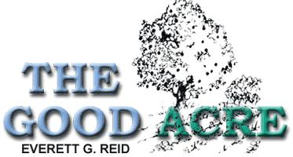
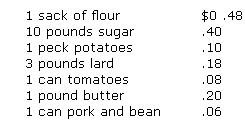
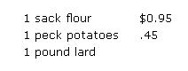
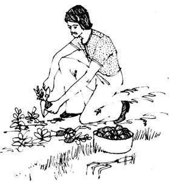

The Good Acre
Here's the story of Everett G. Reid, one of the authors of subsistence farming and gardening articles in both the 30's and 40's, on his family and how they handled the depression and war years.
By the Mother Earth News editors
July/August 1973
If you're too young and tender to remember, almost every subject (except alternative sources of power) featured so far in MOTHER was covered just as earnestly during the Great Depression of the 30's ... and again throughout World War II. Everett G. Reid, one of the authors of a steady stream of subsistence farming and gardening articles in both the 30's and 40's, says:
A small piece of land provided our family with food during the depression when there was no money to buy food ... and again during WW II when there was no food to be had for any amount of money. The following article-first published in the March 1943 issue of Land and Home - is a brief account of how we ate well during those two chapters of our nation's history.
Today we've reached the other end of the line: inflation. Excessive prices now put store-bought food almost out of reach for many citizens, especially retired people on small pensions. I no longer write, but I'd be delighted if you could find someone qualified to do a piece about the value of a homestead today, during this trying chapter in the life and times of our country.
For what it's worth, Dr. Franz Pick - the world's foremost authority on gold and national currencies - is predicting that the inflation we're now experiencing will soon heat up, spiral completely out of control and lead to the collapse of the global monetary system. Maybe so, maybe not. But if it does, we're gonna be right back (in a depression) where Everett Reid came in ... and here's how his family handled that situation and the war years that followed:
Today everyone is talking about Victory gardens. Apparently they intend to do something about it, too. It is midwinter as I write, yet the local hardware dealer tells me that the demand for gardening implements is the greatest he has ever known. It's evident that my neighbors are out to beat the ration book.
Victory gardening is an old business with our family. When we began our modest experiment in self-sufficiency on an acre of land back in 1933 it was called "subsistence gardening". At that time money was scarce and commodities overabundant and of low value. According to my carefully kept diary, I cheerfully worked a nine-hour day for $1.50 and considered myself lucky when I had work to do. Having earned one day's pay, I could take it to town and buy:
It was at that time, when money was scarce, that we made the following resolution: "We will never buy any.thing that can be made or grown at home." It was our way of making my small and uncertain income stretch to its greatest limit.
It worked, too. While other men were wearing out their shoes tramping from factory to factory seeking nonexistent jobs, I stayed at home and hoed my potatoes, beans and carrots. My wife combined these vegetables with a half-pound of salt pork (4 cents) in a kettle of water and produced a tasty and satisfying meal. We ground a few ears of corn, added a few huckleberries and enjoyed that great delicacy, huckleberry muffins. A creamed mixture of new potatoes, peas and green beans was a dish to relish, even in times of plenty. No one ever left our table hungry even though cash was practically unknown.
Even winter held no fears for us. Our cupboards were loaded with canned goods and our yard broke out in a rash of pits holding potatoes, root vegetables, cabbages, pears and apples. At that time, we certainly did not overemphasize its value when we named our home site "The Good Acre".
Today, ten years later, the picture has completely reversed. Now I earn nearly as much in one hour as I then earned in nine. I have been offered and have refused six jobs in one day. Today it is money that is valueless and commodities that are priceless.
When I can command so much cash for my labor do I still think that it is worth my while to putter around with peas and cabbages? Most certainly, for although money is so easily come by, the markets are bare of products that can be bought with it. Today the $1.50 that was a day's wages ten years ago will buy:
No, that's wishful thinking. When I CAN buy lard, the grocer will only allow me a halfpound and that costs 18 cents. The days are frequent when there is none at all. Butter and canned tomatoes are as scarce as dollars were in 1933. Canned beans are only a memory, and sugar is doled out on a ration card. If we had to name our little place today, we wouldconsidering the value of the food it will producestill call it "The Good Acre".
An acre of land, or as many as one can buy without going too heavily into debt, is the best investment for any family's money. It is of little consequence to the subsistence or Victory gardener whether money is scarce or plentiful. In good times or bad his land is his staunchest support.
Today, as in 1933, the source of our next meal is our smallest worry. Whether it is the banks' vaults or the grocers' shelves that are empty, we know that out in our back yard we have the raw material for many a full plate.
While thousands of families are wondering how they will manage on 33 cans of fruit and vegetables for a year, we check our seed needs in the catalogue against the number of full cans left from last season still on our shelves and plan the number we will need to fill with tomatoes, greens and pickles to carry us through next winter. We know that, barring outright catastrophe, there will be a great plenty.
Although the government has issued a warning that can covers may be scarce, that is no cause for worry. Drying was in use before canning and many of the dried products are vastly superior to the canned. It is far easier to dry corn than it is to can it and the dried product is much tastier. It has a chewy goodness that the commercial canners try hard to imitate. Dried peas, too, are better. Snap beans, strung on strings and hung in a hot attic, dry into "leather britches", much esteemed in the South. In a fruity cake dried apples will replace the raisins that are now becoming so scarce. Much of this drying can be trusted to the sun when the days are hot as they usually are at the season when this work is in progress.
Then there are the regular dried foods, mostly grains but some vegetables. We grow our share of them, too. Navy beans, soybeans and field peas all contain protein and fat to help overcome the deficiency of these elements that we are now experiencing because of the meat shortage.
Although they are not complete proteins, such as the animal products provide, their good qualities are not to be despised. The USDA has a free bulletin telling how to make milk, cheese and butter from vegetable soybeans. It looks like a lot of work and we have never tried it, but we do use soybeans in soup and for baking. Although at first they seem flat to a palate accustomed to navy beans, it's worthwhile to cultivate a taste for them because of their high food value.
Nuts are another good source of fat and protein. Hazelnuts make a good border hedge and produce one of the easiest nuts to grow and crack. If you have patience, hickory, black walnut or butternut trees will make fine shade and produce abundant food. Sunflowers are in the same class. The Russians have chewed these seeds for generations to get fat that sticks to their ribs. The Germans are using them to make margarine. They also make a fine windbreak around the garden and excellent food for rabbits or chickens.
"Enriched" flour and bread are the outstanding food contributions to this war period. It sounds very complicated to the layman and no doubt it is. First the miller removes the natural vitamins from the flour. A great laboratory makes a high-priced substitute for them and then the baker pours it back in. We save all this fuss by leaving them in in the first place.
A quarter of an acre will produce enough wheat (rye is also good and easier to grow) to fill our bread needs. We thrash it by grasping the stalk ends and beating the grain heads against a wall. The grain is coarsely ground through a $3.50 hand flour mill which should be a part of the equipment of every subsistence household. A coffee grinder can be used if one is available, and that is about the only use there is for one nowadays.
A little white flour is needed to make the yeast sponge, and the bread is best if it is raised once and then formed into loaves and baked in a slow oven without further rising. We call this "peasant bread". It is brown, sweet, crusty, chewy and DELICIOUS. Of course, it doesn't have the air cells that make raised bread light, but then it's not the stomach but the lungs where air is supposed to be stored. Light bread can be made with whole wheat but it lacks the fine flavor of the unraised product.
A cereal that eliminates the need for little pink pills is made by cooking one part of ground wheat in two parts of water in a double boiler for a couple of hours in the evening and reheating it to serve for breakfast.
Our little mill will also make fine meal from flint corn. It must be ground twice, first coarse and then fine, and screened through a flour sieve to remove the hard husks which make fine feed for small chicks.
We also use our flour mill in making a coffee substitute. Either wheat or soybeans, when ground and lightly roasted, will make a drink that is fit to wash down the doughnuts of a potentate. Of course it doesn't taste like cof fee, but neither does a high-priced cereal drink which is widely advertised by radio and sells for far more than it's worth. The general use of such a simple drink to replace coffee would no doubt work a hardship on our Good Neighbor policy, but it would go far toward solving our manpower shortage as both Gracie Allen and Henry Aldrich, together with their supporting casts, would be free to don overalls and drive rivets in a plane factory.
A beverage as good as any China ever exported can be brewed from sage leaves. A further inducement to growing this plant is that it's an independent, hardy perennial with tall, lavender, spiked flowers that attract clouds of those airy spirits, the hummingbirds.
Spinach is a stubborn weed to grow so we replace it with rutabaga tops. We prefer them to the Southerner's turnip greens because they are smooth and succulent without the rough texture of the turnip tops.
From an acre of grain and vegetables there are a lot of waste products such as cornstalks, cabbage leaves, lawn clippings and vegetable peelings. These we turn into meat-and one of the finest cooking fats-by feeding them to a few geese. We have not found it wise to attempt to raise more than six geese on an acre, and one of these we eat on the Fourth of July and a couple more at midsummer birthday parties if the rest are to be kept for the winter holidays without buying feed. They are great weed destroyers.
If our Victory garden is to live up to its name it must be victorious over its enemies. Bugs, disease and slovenly work on the part of the gardener are the major ones. The gardener who plans, plants, sprays and cultivates most efficiently reaps the greatest good from his industry. We countenance no vacant ranks in our plant army. As soon as one rank is demolished we have another ready to take its place.
Yes, it's truly Victory gardening. Victory not only over the enemies of our nation but victory over those enemies we meet and contend with daily throughout our lives, in war or peace. Victory over depression and inflation, poverty, hunger and disease. Victory over the food ration book and the man at the employment office who says, "Nothing today."
Give us a spade, rake and hoe, a few seeds and a little patch of ground. With these weapons we conquer.
|
 |
 |
 |
 |
 |
|